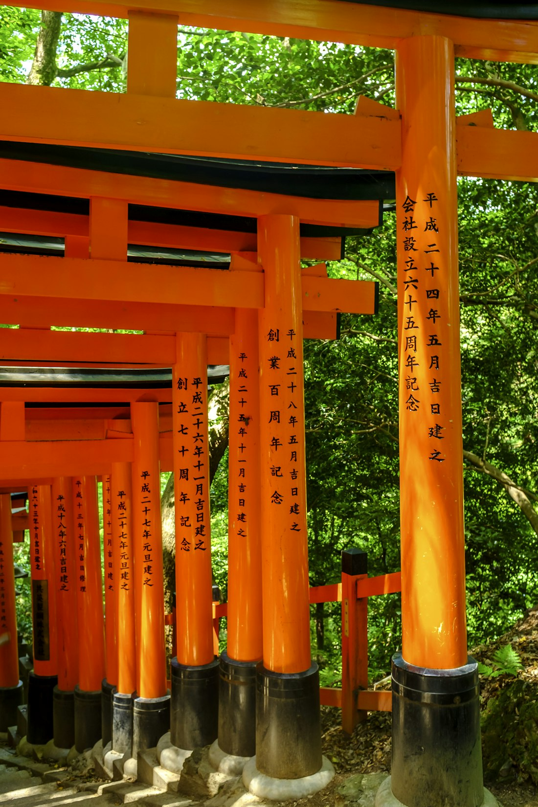
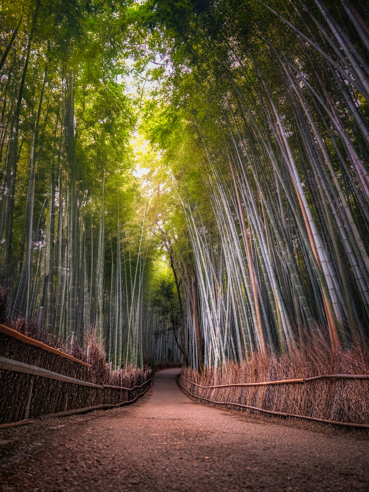
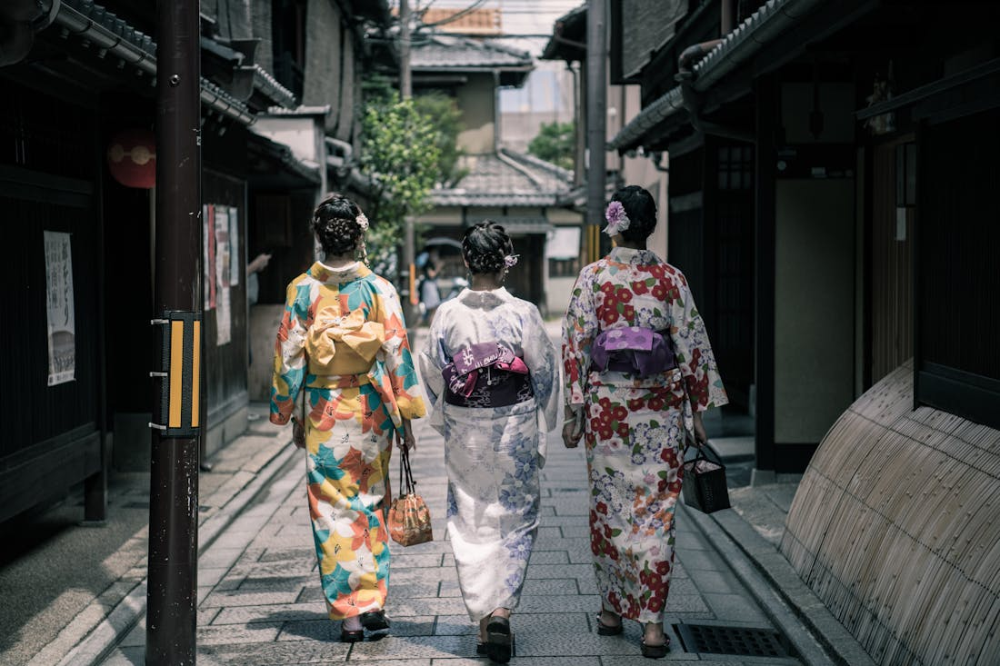
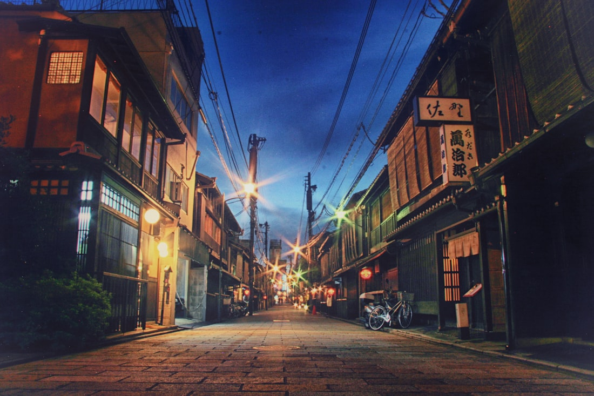
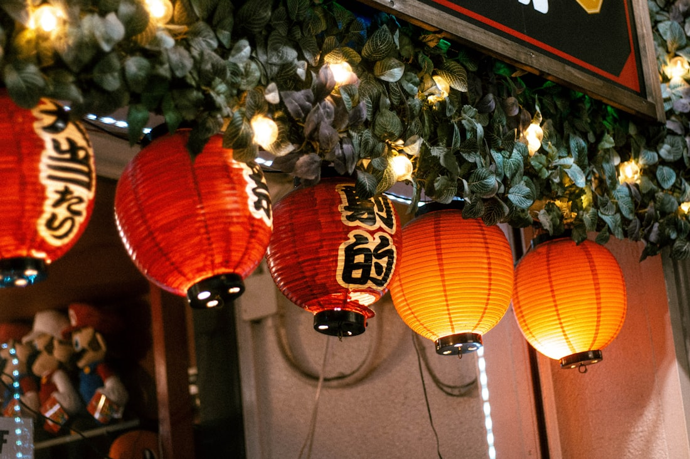
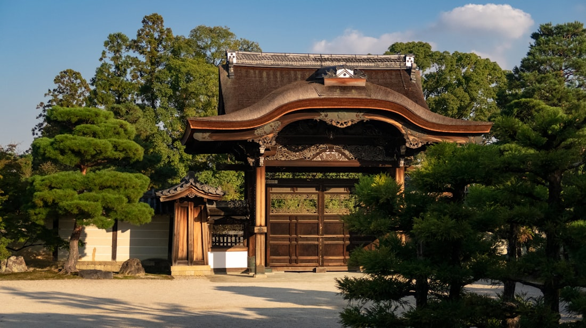

Ancient temples before the crowds, silent bamboo groves, geisha alleys at dusk — Kyoto as it was always meant to be experienced.
Every photo taken at the times and angles we actually visit — before tourists arrive.





We time every stop to miss the tour bus crowds — arriving before them, leaving before they arrive.
Usually responds within 2 hours · WhatsApp preferred